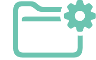
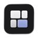
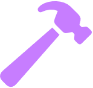
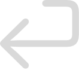
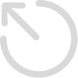

Sift: three picks
One letter per question. The outlined card is my suggestion. Everything else on your list is being built now.
1The project folder button
Today it is a page icon, so it reads like "notes", not "attach a folder". Gray means no folder yet, teal means a folder is attached.
Today
doc.text
A. Folder with plus suggested
folder.fill.badge.plus: says "add a folder" at a glance
B. Folder with gear
folder.badge.gearshape: says "project setup"

2The purple ring around the rating
What it means today: "you build this app" (My App, with Developer mode on). The purple hammer next to the name already says the same thing, so the ring repeats it.
Today
Strong ring on every app you build


0.17.0A. Drop it suggested
The hammer alone marks your apps. Every rating looks the same.
B. Keep it, quieter
A thin faint ring, and hovering says "You build this app".
3Search as a small palette
The rescan arrow leaves the top bar (it stays in the menu bar menu with its shortcut). Its spot gets a search button, and the big "Search apps" field leaves the header. Click it, or press Command-F or Command-K: a small palette opens, you type, Return opens the app, Escape closes. Which place for the palette?
A. Centered, like Spotlight suggested
Floats near the top middle of Sift's window.

open
closeB. Under the search button
Drops down from the button, like a menu bar popover.
Both: solid background (no see-through glass), search only, shows name, version and icon. The dark divider lines go away in both.
1A 2A 3A, or change anything you like.